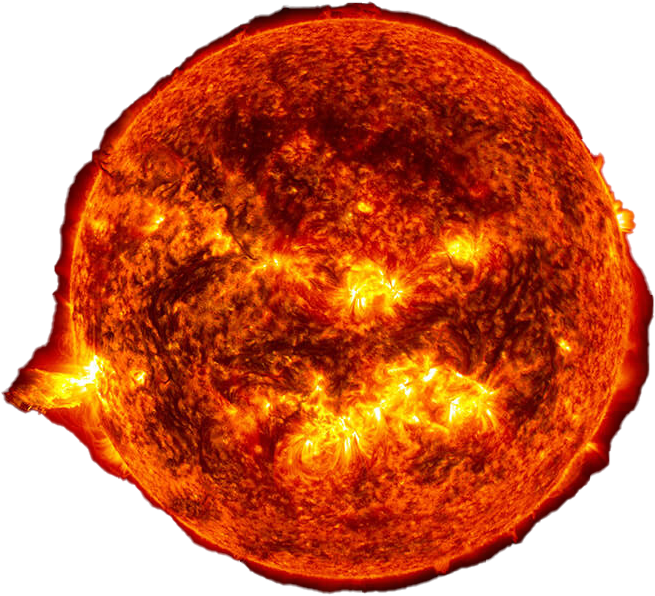
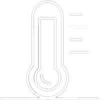
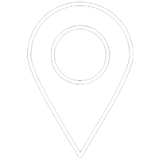
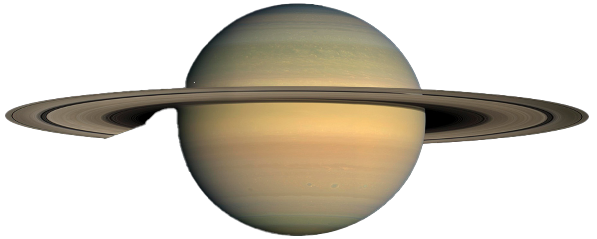
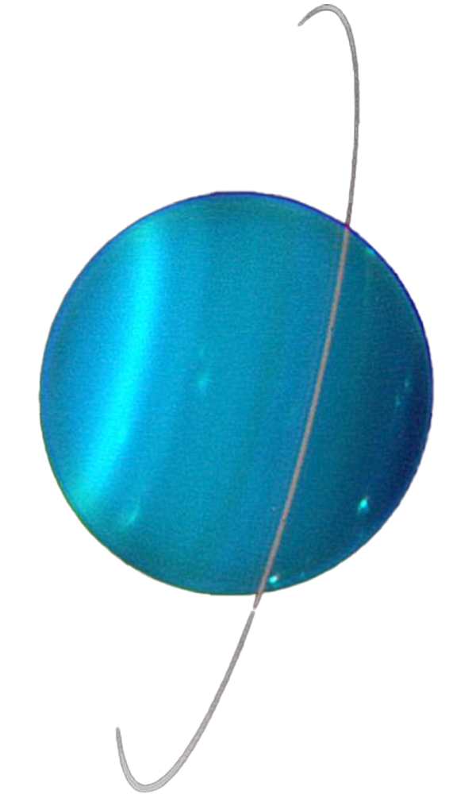

Attention, l'échelle n'est pas respectée. Mercure, Vénus, la Terre et Mars sont proportiennelles les unes aux autres ainsi que Jupiter, Saturne, Uranus et Neptune.

Le soleil est l'étoile du système solaire. C'est autour de lui que se sont construites les planètes.
Il s'est formé suite à l'effondrement sur lui-même d'un nuage de gazs et de poussières. Il représente 99% de la masse du système solaire. Il est constitué principalement d'hydrogène et d'hélium.
Étoile

5 500°C
696 340km de rayon
Mercure est la plus petite planète du système solaire, sa taille se rapproche de celle de la Lune. Elle ne possède pas d'athmosphère et son sol est recouvert d'impacts de météorites et d'astéroïdes. Les températures sur Mercure sont étonnantes, son côté face au soleil est l'endroit le plus chaud du système solaire alors que dans le même temps ses pôles peuvent atteindre les températures les plus froides.
Planète tellurique
430°C à -180°C
2 440km de rayon

57,9m km du soleil
Vénus a une athmosphère très dense composé de gaz. Il est difficile de voir sa surface depuis les téléscopes, cependant on sait que son sol est entiérement recouvert de lave et de volcans. Il y a également d'énormes cyclones au niveau des pôles.
Planète tellurique
450°C
6 052km de rayon
108m km du soleil
La Terre est la seule planète du système solaire et même de l'univers, sur laquelle la vie s'est développée, d'après les connaissances actuelles. Ceci s'explique, entre autre, par la présence de vastes étendues d'eau liquide. C'est aussi la planète tellurique du système solaire avec le plus grand satellite naturel qui est la Lune.
Planète tellurique
15°C
6 371km de rayon
150m km du soleil
Mars est caractérisée par sa couleur rouge dû à ses roches qui contiennent beaucoup d'oxyde de fer. À sa surface il y a des cratères d'impact, des dunes de sables, des vallées, des immenses cannyons, de la glace et les plus hauts volcans du système solaire. Autour d'elle, gravitent ses deux satellites naturels : Déimos et Phobos, ils ne sont pas assez grands pour avoir une forme sphérique.
Planète tellurique
-63°C
3 390km de rayon
228m km du soleil
Jupiter est la plus ancienne planète du système solaire et également la plus grande. Elle est caractérisée par sa grosse tâche rouge faisant deux fois la taille de la Terre et qui est certainement un cyclone. Il n'y a pas de sol à la surface de Jupiter, à l'instar des autres planètes gazeuses. Sa surface se compose uniquement de nuages de gazs. Les scientifiques dénombrent pour le moment 79 satellites naturels en orbite autour de Jupiter
Géante de gazs
-108°C à -161°C
69 911km de rayon
779m km du soleil

Saturne s'est formée peu après Jupiter. Elle est bien connue pour ses anneaux qui sont constitués de blocs de roches et de glaces. Ces anneaux sont les plus complexes du système solaire, ils s'étendent jusqu'à 282 000 km de Saturne et chacun toune à une vitesse différente. Tout comme Jupiter elle possède de nombreux satellites naturels.
Géante de gazs
-139°C à -189°C
58 232km de rayon
1.43M km du soleil

Avec Neptune, Uranus fait partie des géantes de glaces car elles sont principalement composées d'eau, d'ammoniac et de méthane (qui leur donne d'ailleurs cette couleur bleue) sous forme solide. À l'inverse des autres planètes du système solaire, Uranus tourne sur elle-même sur un axe horizontal. Même s'ils sont moins connus que ceux de Saturne, Uranus possède aussi des anneaux.
Géante de glaces
-197°C à -226°C
25 362km de rayon
2.9M km du soleil
Netpune est la planète la plus éloignée du soleil. Sa composition ressemble beaucoup à celle d'Uranus. On trouve sur Neptune les vents les plus puissants du système solaire. Il y a plusieurs tempêtes à sa surface, et comme Jupiter, Neptune possède une tache (la Grande Tache sombre) de la taille de la Terre qui est dû à un cyclone.
Géante de glaces
-200°C à -218°C
24 622km de rayon
4.5M km du soleil